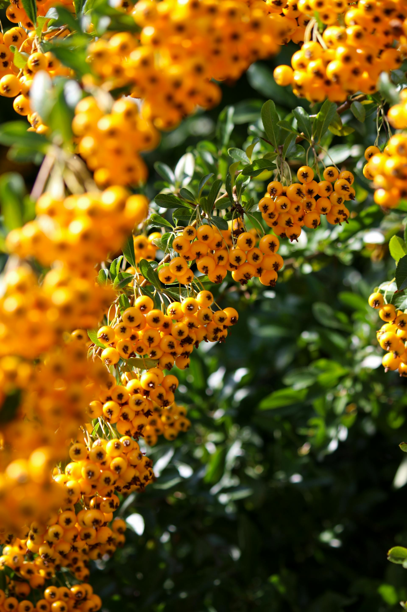
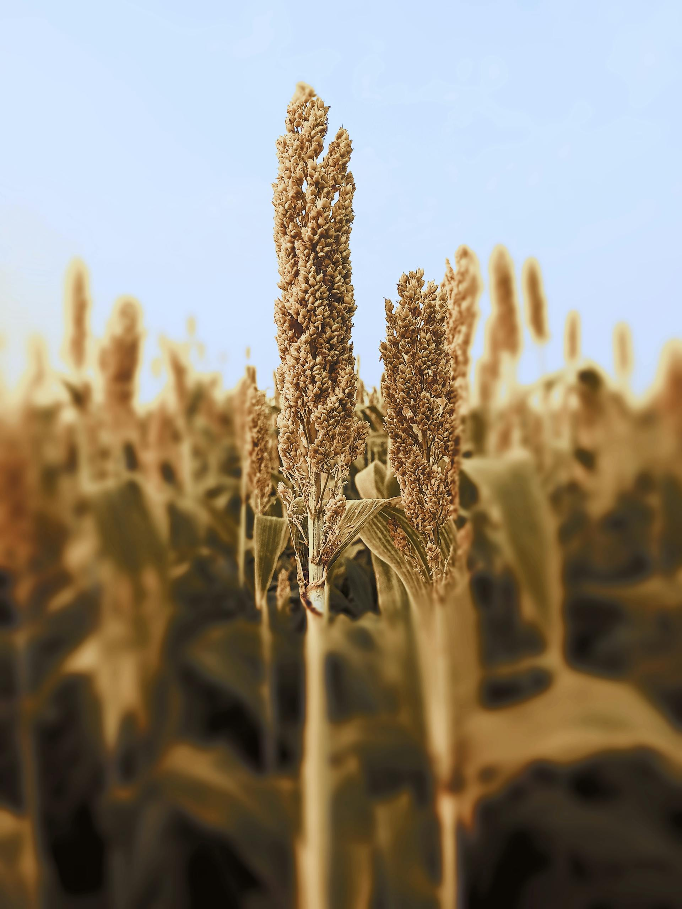

Сорго – Сортове
ТОП предложение

KWS Аргус
Средноранен сорт зърнено сорго с висока добивност и стабилност при различни климатични условия. Отличава се с ниско съдържание на танин и изключителна устойчивост на полягане и болести. Подходящ за сухи райони и леки почви.
Научете повечеKWS Лупус
Ранен сорт зърнено сорго с отлична енергия на покълване и бърз първоначален растеж. Има добра устойчивост на засушаване и осигурява стабилни резултати в различни региони на България. Препоръчва се за производство на зърно и фураж.
Научете повече

KWS Тарзан
Високопродуктивен хибриден сорт за силаж и биомаса. Отличава се с мощна вегетация, висока листна маса и отлична смилаемост. Подходящ за фураж, биогаз и животновъдни стопанства, които търсят висока енергийна стойност.
Научете повече